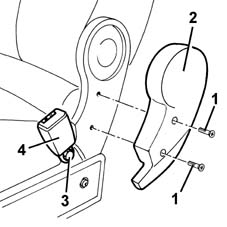

7065B22 central safety belt anchorage link - r+r
- Path
- Procedures > 70 FITTINGS > 7065 SEAT BELTS AND ACCESSORIES > 7065B rear safety belts > 7065B22 central safety belt anchorage link - r+r
- Kind
- repair procedure (removal / refitting; the operation number is the code)
- Applies to
- all engines; all production periods
- Interactive page
- https://sloeber94.github.io/elrnDB-fMltpl/en/#/2892283
Applies to: all engines; all production periods
 Removing
Removing
 Refitting
RefittingMove the seat to a suitable position.
1. Undo the bolts.
2. Remove the shield.
3. Undo the bolt.
4. Remove the anchorage link.

Applies to: all engines; all production periods
Refitting
RemovingCheck that the link is undamaged.
Position the link.
Tighten the bolt to the specified torque.
 | Fastening | Component | Ø | Value (daNm) |
|---|---|---|---|---|
- | Bolt | CENTRE REAR SEAT BELT ATTACHMENT BUCKLE..... | - | 4.0 |
Position the shield and fix it using the bolts